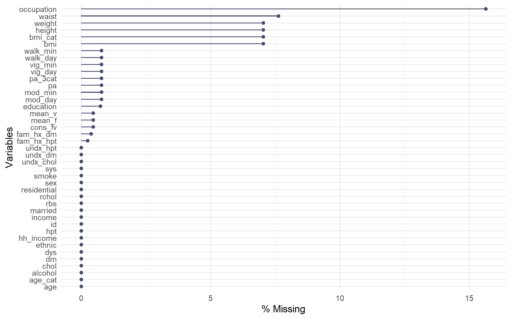
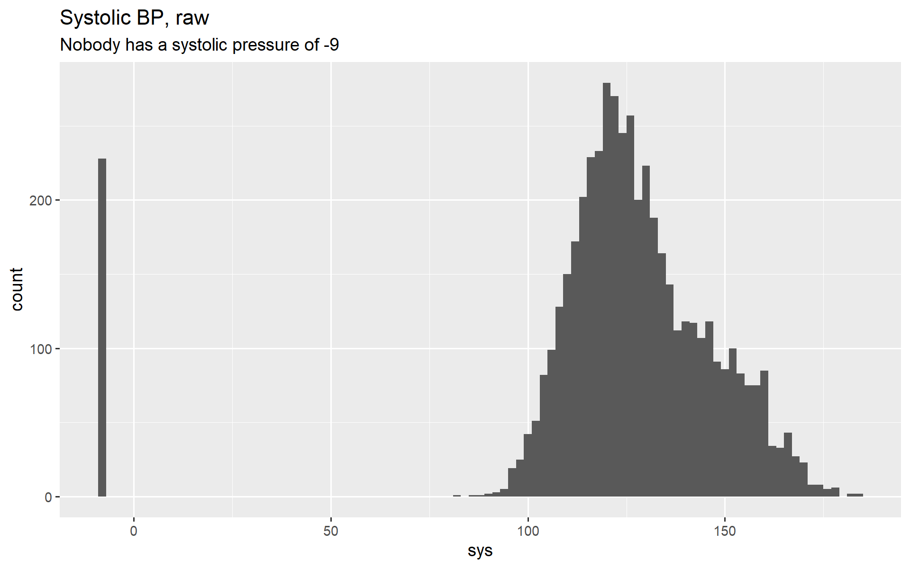
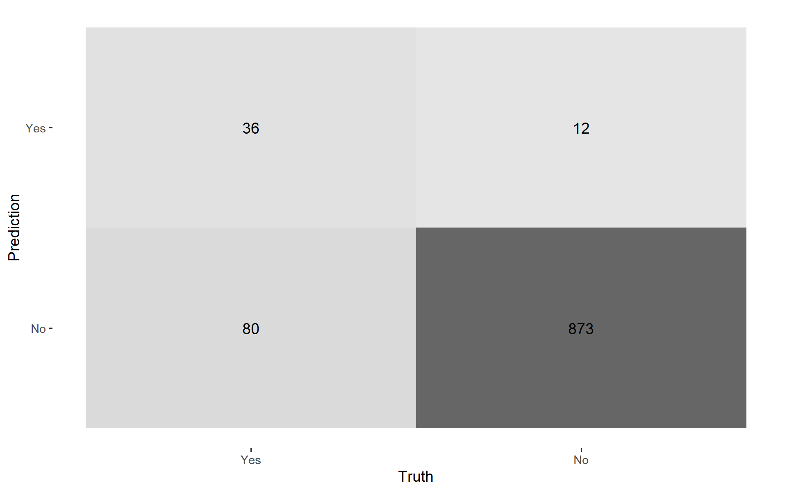
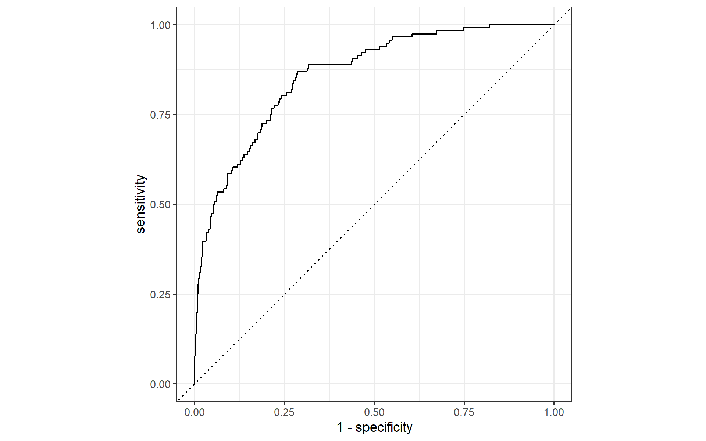

library(tidymodels) # rsample, recipes, parsnip, workflows, tune, yardstick, dials, broom, dplyr, ggplot2 ...
library(skimr) # one-line data summaries
library(naniar) # missingness plots
tidymodels_prefer() # when two packages export the same name, prefer the tidymodels oneTutorial 1 · The pipeline: split, recipe, workflow, baseline
Session 2 · Day 1, 10.50–13.00 · Slides 02
1 · Packages
2 · Look before you model
nhms_raw <- readr::read_csv("data/nhms_synthetic.csv", show_col_types = FALSE)
glimpse(nhms_raw)Rows: 5,000
Columns: 41
$ id <dbl> 1, 2, 3, 4, 5, 6, 7, 8, 9, 10, 11, 12, 13, 14, 15, 16, 17,…
$ sex <dbl> 1, 2, 2, 2, 1, 2, 1, 1, 1, 1, 1, 2, 2, 2, 2, 1, 2, 2, 1, 2…
$ age <dbl> 57, 76, 92, 68, 88, 45, 47, 54, 34, 79, 61, 43, 61, 52, 37…
$ age_cat <dbl> 4, 5, 5, 5, 5, 3, 3, 4, 2, 5, 5, 3, 5, 4, 2, 5, 4, 5, 5, 3…
$ ethnic <dbl> 1, 4, 2, 1, 1, 4, 1, 1, 1, 1, 2, 1, 4, 2, 2, 1, 2, 3, 3, 5…
$ residential <dbl> 2, 1, 2, 2, 2, 1, 1, 2, 1, 1, 2, 2, 2, 1, 2, 2, 2, 2, 2, 2…
$ married <dbl> 2, 2, 3, 2, 3, 2, 2, 2, 2, 2, 3, 1, 2, 2, 2, 3, 2, 3, 3, 1…
$ education <dbl> 3, 1, 2, 3, 3, 3, 3, 3, 3, 1, 4, 3, 3, 3, 4, 3, 4, 4, 2, 3…
$ income <dbl> 1, 3, 3, 1, 1, 2, 3, 3, 1, 3, 1, 2, 2, 1, 1, 1, 2, 2, 1, 3…
$ hh_income <dbl> 4169, 1475, 1367, 4120, 2719, 17575, 1059, 1731, 2735, 192…
$ occupation <dbl> 4, 1, NA, 5, 3, NA, 1, 4, 4, NA, 2, 2, 5, 3, 1, 4, 2, 4, 3…
$ cons_fv <dbl> 2, 2, 2, 2, 2, 2, 2, 2, 1, 2, 2, 2, 2, 2, 2, 2, 2, 2, 2, 2…
$ alcohol <dbl> 2, 2, 2, 2, 2, 2, 2, 2, 2, 2, 2, 2, 2, 2, 2, 2, 2, 2, 2, 1…
$ smoke <dbl> 3, 3, 2, 1, 3, 3, 3, 3, 3, 3, 3, 1, 3, 3, 3, 3, 3, 1, 3, 3…
$ pa <dbl> 2, 1, 1, 2, 2, 2, 2, 1, 1, 1, 2, 2, 2, 1, 1, 2, 2, 2, 2, 1…
$ fam_hx_dm <dbl> 2, 2, 1, 1, 2, 2, 2, 2, 2, 2, 2, 2, 2, 2, 2, 1, 2, 2, 2, 2…
$ fam_hx_hpt <dbl> 1, 1, 2, 1, 1, 2, 2, 2, 2, 2, 1, 2, 2, 1, 2, 2, 2, 2, 2, 2…
$ undx_dm <dbl> 0, 0, 0, 1, 0, 1, 0, 0, 0, 1, 0, 0, 0, 0, 0, 1, 0, 0, 0, 0…
$ undx_hpt <dbl> 1, 0, 0, 0, 0, 0, 0, 0, 0, 1, 1, 0, 0, 0, 0, 1, 0, 0, 1, 0…
$ undx_chol <dbl> 0, 1, 1, 1, 0, 0, 0, 0, 0, 1, 1, 0, 1, 1, 1, 1, 1, 0, 0, 1…
$ hpt <dbl> 0, 0, 0, 0, 0, 0, 0, 0, 0, 0, 0, 0, 0, 0, 0, 0, 0, 0, 0, 0…
$ dm <dbl> 0, 0, 0, 0, 0, 0, 0, 0, 0, 0, 0, 0, 0, 0, 0, 0, 0, 0, 0, 0…
$ chol <dbl> 0, 0, 0, 0, 0, 0, 0, 0, 0, 0, 0, 0, 0, 0, 0, 0, 0, 0, 0, 0…
$ bmi_cat <dbl> 1, 1, 2, 1, 2, 2, 1, 1, 1, NA, NA, NA, 2, 1, 3, NA, 2, 2, …
$ bmi <dbl> 24.41, 20.48, 26.42, 24.70, 26.06, 27.57, 24.10, 23.49, 18…
$ waist <dbl> 78.3, 71.6, 84.3, 88.4, 78.2, 93.0, 77.6, 82.4, 59.3, NA, …
$ weight <dbl> 51.6, 53.2, 62.8, 64.1, 63.6, 75.6, 58.1, 55.9, 45.3, NA, …
$ height <dbl> 145.4, 161.2, 154.2, 161.1, 156.2, 165.6, 155.3, 154.3, 15…
$ sys <dbl> 156.6, 135.9, 130.3, -9.0, 115.8, 119.0, 117.8, 143.0, 114…
$ dys <dbl> 91.0, 82.3, 89.5, -9.0, 83.8, 78.1, 83.9, 70.4, 77.5, 100.…
$ rbs <dbl> 6.2, 5.7, 4.6, 11.7, 6.2, 17.3, 5.3, -9.0, 5.3, 15.3, 6.7,…
$ rchol <dbl> 4.66, 6.75, 5.57, 6.28, 4.33, 4.15, 4.02, -9.00, 3.76, 6.3…
$ mean_f <dbl> 1.65, 0.84, 2.07, 0.59, 1.26, 0.80, 0.11, 0.47, 1.17, 1.94…
$ mean_v <dbl> 1.29, 1.52, 0.51, 2.43, 0.73, 1.53, 0.27, 0.38, 4.16, 2.85…
$ pa_3cat <dbl> 1, 2, 2, 1, 1, 1, 1, 2, 2, 2, 1, 1, 1, 2, 2, 1, 1, 1, 1, 2…
$ vig_day <dbl> 1, 0, 0, 0, 0, 0, 0, 0, 3, 1, 0, 0, 0, 1, 0, 0, 0, 0, 2, 0…
$ vig_min <dbl> 21, 0, 0, 0, 0, 0, 0, 0, 62, 59, 0, 0, 0, 37, 0, 0, 0, 0, …
$ mod_day <dbl> 0, 2, 2, 1, 1, 1, 3, 0, 3, 3, 0, 1, 1, 1, 3, 0, 0, 0, 0, 3…
$ mod_min <dbl> 0, 32, 42, 26, 13, 34, 18, 0, 40, 28, 0, 13, 36, 36, 29, 0…
$ walk_day <dbl> 2, 5, 5, 1, 0, 1, 1, 7, 6, 7, 1, 2, 2, 7, 6, 3, 2, 2, 0, 3…
$ walk_min <dbl> 37, 32, 42, 17, 0, 10, 15, 54, 25, 42, 10, 31, 46, 14, 26,…5,000 simulated adults, 41 variables (see the data dictionary). Everything is a numeric code right now: R has no idea that ethnic = 3 means Indian, or that -9 means not measured.
skim(nhms_raw)| Name | nhms_raw |
| Number of rows | 5000 |
| Number of columns | 41 |
| _______________________ | |
| Column type frequency: | |
| numeric | 41 |
| ________________________ | |
| Group variables | None |
Variable type: numeric
| skim_variable | n_missing | complete_rate | mean | sd | p0 | p25 | p50 | p75 | p100 | hist |
|---|---|---|---|---|---|---|---|---|---|---|
| id | 0 | 1.00 | 2500.50 | 1443.52 | 1.00 | 1250.75 | 2500.50 | 3750.25 | 5000.00 | ▇▇▇▇▇ |
| sex | 0 | 1.00 | 1.47 | 0.50 | 1.00 | 1.00 | 1.00 | 2.00 | 2.00 | ▇▁▁▁▇ |
| age | 0 | 1.00 | 58.72 | 15.40 | 24.00 | 47.00 | 57.00 | 69.00 | 92.00 | ▂▇▇▆▃ |
| age_cat | 0 | 1.00 | 4.03 | 1.03 | 1.00 | 3.00 | 4.00 | 5.00 | 5.00 | ▁▂▃▅▇ |
| ethnic | 0 | 1.00 | 1.89 | 1.17 | 1.00 | 1.00 | 1.00 | 2.00 | 5.00 | ▇▃▁▂▁ |
| residential | 0 | 1.00 | 1.71 | 0.45 | 1.00 | 1.00 | 2.00 | 2.00 | 2.00 | ▃▁▁▁▇ |
| married | 0 | 1.00 | 2.13 | 0.52 | 1.00 | 2.00 | 2.00 | 2.00 | 3.00 | ▁▁▇▁▂ |
| education | 37 | 0.99 | 2.94 | 0.90 | 1.00 | 2.00 | 3.00 | 4.00 | 4.00 | ▂▃▁▇▆ |
| income | 0 | 1.00 | 1.89 | 0.85 | 1.00 | 1.00 | 2.00 | 3.00 | 3.00 | ▇▁▅▁▆ |
| hh_income | 0 | 1.00 | 5053.43 | 4024.36 | 543.00 | 1968.00 | 3895.50 | 6695.25 | 40910.00 | ▇▂▁▁▁ |
| occupation | 782 | 0.84 | 3.10 | 1.30 | 1.00 | 2.00 | 3.00 | 4.00 | 5.00 | ▃▇▇▆▆ |
| cons_fv | 23 | 1.00 | 1.98 | 0.13 | 1.00 | 2.00 | 2.00 | 2.00 | 2.00 | ▁▁▁▁▇ |
| alcohol | 0 | 1.00 | 1.90 | 0.30 | 1.00 | 2.00 | 2.00 | 2.00 | 2.00 | ▁▁▁▁▇ |
| smoke | 0 | 1.00 | 2.51 | 0.80 | 1.00 | 2.00 | 3.00 | 3.00 | 3.00 | ▂▁▁▁▇ |
| pa | 39 | 0.99 | 1.46 | 0.50 | 1.00 | 1.00 | 1.00 | 2.00 | 2.00 | ▇▁▁▁▇ |
| fam_hx_dm | 19 | 1.00 | 1.77 | 0.42 | 1.00 | 2.00 | 2.00 | 2.00 | 2.00 | ▂▁▁▁▇ |
| fam_hx_hpt | 12 | 1.00 | 1.70 | 0.46 | 1.00 | 1.00 | 2.00 | 2.00 | 2.00 | ▃▁▁▁▇ |
| undx_dm | 0 | 1.00 | 0.12 | 0.32 | 0.00 | 0.00 | 0.00 | 0.00 | 1.00 | ▇▁▁▁▁ |
| undx_hpt | 0 | 1.00 | 0.23 | 0.42 | 0.00 | 0.00 | 0.00 | 0.00 | 1.00 | ▇▁▁▁▂ |
| undx_chol | 0 | 1.00 | 0.44 | 0.50 | 0.00 | 0.00 | 0.00 | 1.00 | 1.00 | ▇▁▁▁▆ |
| hpt | 0 | 1.00 | 0.00 | 0.00 | 0.00 | 0.00 | 0.00 | 0.00 | 0.00 | ▁▁▇▁▁ |
| dm | 0 | 1.00 | 0.00 | 0.00 | 0.00 | 0.00 | 0.00 | 0.00 | 0.00 | ▁▁▇▁▁ |
| chol | 0 | 1.00 | 0.00 | 0.00 | 0.00 | 0.00 | 0.00 | 0.00 | 0.00 | ▁▁▇▁▁ |
| bmi_cat | 352 | 0.93 | 1.80 | 0.74 | 1.00 | 1.00 | 2.00 | 2.00 | 3.00 | ▇▁▇▁▃ |
| bmi | 352 | 0.93 | 26.19 | 4.37 | 14.00 | 23.26 | 26.16 | 29.19 | 44.85 | ▂▇▇▂▁ |
| waist | 381 | 0.92 | 86.17 | 12.26 | 55.00 | 77.90 | 86.20 | 94.30 | 133.20 | ▂▇▇▂▁ |
| weight | 352 | 0.93 | 66.87 | 13.24 | 31.00 | 58.10 | 66.00 | 75.40 | 120.30 | ▂▇▇▂▁ |
| height | 352 | 0.93 | 159.58 | 8.61 | 133.40 | 153.20 | 159.30 | 165.80 | 189.20 | ▁▆▇▃▁ |
| sys | 0 | 1.00 | 122.69 | 33.09 | -9.00 | 115.40 | 125.30 | 138.93 | 184.20 | ▁▁▁▇▂ |
| dys | 0 | 1.00 | 75.41 | 20.94 | -9.00 | 71.30 | 77.80 | 85.60 | 116.50 | ▁▁▁▇▂ |
| rbs | 0 | 1.00 | 5.58 | 4.97 | -9.00 | 4.90 | 5.90 | 7.00 | 24.70 | ▁▁▇▁▁ |
| rchol | 0 | 1.00 | 4.14 | 3.88 | -9.00 | 4.18 | 4.91 | 6.06 | 8.26 | ▁▁▁▆▇ |
| mean_f | 23 | 1.00 | 0.82 | 0.61 | 0.01 | 0.37 | 0.68 | 1.10 | 4.55 | ▇▃▁▁▁ |
| mean_v | 23 | 1.00 | 1.35 | 0.87 | 0.05 | 0.72 | 1.17 | 1.78 | 7.03 | ▇▃▁▁▁ |
| pa_3cat | 39 | 0.99 | 1.55 | 0.52 | 1.00 | 1.00 | 2.00 | 2.00 | 3.00 | ▇▁▇▁▁ |
| vig_day | 39 | 0.99 | 0.80 | 1.22 | 0.00 | 0.00 | 0.00 | 1.00 | 7.00 | ▇▁▁▁▁ |
| vig_min | 39 | 0.99 | 17.45 | 22.07 | 0.00 | 0.00 | 0.00 | 37.00 | 89.00 | ▇▂▂▁▁ |
| mod_day | 39 | 0.99 | 1.60 | 1.54 | 0.00 | 0.00 | 1.00 | 2.00 | 7.00 | ▇▃▃▁▁ |
| mod_min | 39 | 0.99 | 24.87 | 19.83 | 0.00 | 0.00 | 27.00 | 40.00 | 89.00 | ▇▆▆▂▁ |
| walk_day | 39 | 0.99 | 3.15 | 1.93 | 0.00 | 2.00 | 3.00 | 4.00 | 7.00 | ▅▅▇▂▃ |
| walk_min | 39 | 0.99 | 28.79 | 15.58 | 0.00 | 17.00 | 29.00 | 39.00 | 88.00 | ▅▇▆▁▁ |
The outcome prevalence is the first number to memorise:
nhms_raw |> count(undx_dm) |> mutate(prop = n / sum(n))About 12 % have undiagnosed diabetes. Keep that in mind when someone shows you an “accuracy” of 88 %: that is what you get by predicting No for everyone.
Missingness
gg_miss_var(nhms_raw, show_pct = TRUE)
nhms_raw |>
mutate(bmi_missing = is.na(bmi)) |>
group_by(bmi_missing) |>
summarise(n = n(), mean_age = mean(age), pct_rural = mean(residential == 1))BMI is missing more often in older and rural respondents, so it is not missing completely at random. Dropping those rows would quietly tilt the model toward younger urban people. We will impute instead — inside the recipe, where it belongs.
The sentinel problem
summary(nhms_raw$sys) Min. 1st Qu. Median Mean 3rd Qu. Max.
-9.0 115.4 125.3 122.7 138.9 184.2 ggplot(nhms_raw, aes(sys)) + geom_histogram(binwidth = 2) +
labs(title = "Systolic BP, raw", subtitle = "Nobody has a systolic pressure of -9")
-9 is the export’s code for not measured. Leave it in and the imputation step will “impute” nothing, the scaling step will learn a standard deviation inflated by impossible values, and every model downstream will quietly absorb the error. This is the single most common data-cleaning miss in survey-based ML.
3 · Clean: sentinels → NA, codes → labelled factors
nhms <- nhms_raw |>
mutate(across(c(sys, dys, rbs, rchol), \(x) na_if(x, -9))) |>
mutate(
# OUTCOMES: the event level ("Yes") comes FIRST. yardstick treats the first level as the event of interest.
undx_dm = factor(undx_dm, levels = c(1, 0), labels = c("Yes", "No")),
undx_hpt = factor(undx_hpt, levels = c(1, 0), labels = c("Yes", "No")),
undx_chol = factor(undx_chol, levels = c(1, 0), labels = c("Yes", "No")),
sex = factor(sex, levels = 1:2, labels = c("Female", "Male")),
age_cat = factor(age_cat, levels = 1:5, labels = c("18-29", "30-39", "40-49", "50-59", "60+")),
ethnic = factor(ethnic, levels = 1:5, labels = c("Malay", "Chinese", "Indian", "Other Bumiputera", "Others")),
residential = factor(residential, levels = 1:2, labels = c("Rural", "Urban")),
married = factor(married, levels = 1:3, labels = c("Single", "Married", "Widowed/Divorced")),
education = factor(education, levels = 1:4, labels = c("None", "Primary", "Secondary", "Tertiary")),
income = factor(income, levels = c(3, 1, 2), labels = c("B40", "M40", "T20")), # odd coding in the source file
occupation = factor(occupation, levels = 1:5, labels = c("Government", "Private", "Self-employed", "Homemaker", "Not working")),
cons_fv = factor(cons_fv, levels = 1:2, labels = c("Adequate", "Inadequate")),
alcohol = factor(alcohol, levels = 1:2, labels = c("Yes", "No")),
smoke = factor(smoke, levels = 1:3, labels = c("Current", "Former", "Never")),
pa = factor(pa, levels = 1:2, labels = c("Active", "Inactive")),
pa_3cat = factor(pa_3cat, levels = 1:3, labels = c("Low", "Moderate", "High")),
fam_hx_dm = factor(fam_hx_dm, levels = 1:2, labels = c("Yes", "No")),
fam_hx_hpt = factor(fam_hx_hpt, levels = 1:2, labels = c("Yes", "No")),
bmi_cat = factor(bmi_cat, levels = 1:3, labels = c("<25", "25-29.9", "30+"))
)
levels(nhms$undx_dm) # must be "Yes" "No" - check this every single time[1] "Yes" "No" summary(nhms$sys) # NAs instead of -9s Min. 1st Qu. Median Mean 3rd Qu. Max. NA's
82.1 116.9 126.1 129.0 139.9 184.2 228
The event-level rule
yardstick metrics assume the first factor level is the event (event_level = "first"). Probability columns are named after the levels (.pred_Yes, .pred_No); use .pred_Yes for ROC, PR and Brier. If your outcome arrives as 0/1, the default factor order puts "0" first and your sensitivity and specificity silently swap.
4 · The naive model — a deliberate mistake
Throw everything in and see what happens.
naive_data <- nhms |> select(-id, -undx_hpt, -undx_chol, -pa) # `pa` is an exact recode of pa_3cat; keep one copy
set.seed(2026)
naive_split <- initial_split(naive_data, prop = 0.80, strata = undx_dm)
naive_train <- training(naive_split)
naive_test <- testing(naive_split)
naive_rec <- recipe(undx_dm ~ ., data = naive_train) |>
step_impute_median(all_numeric_predictors()) |>
step_impute_mode(all_nominal_predictors()) |>
step_dummy(all_nominal_predictors()) |>
step_zv(all_predictors()) |>
step_normalize(all_numeric_predictors())
lr_spec <- logistic_reg() |> set_engine("glm") |> set_mode("classification")
naive_fit <- workflow(naive_rec, lr_spec) |> fit(data = naive_train)
naive_preds <- augment(naive_fit, new_data = naive_test) # test data + .pred_class + .pred_Yes + .pred_No
roc_auc(naive_preds, truth = undx_dm, .pred_Yes)An AUC near 0.98. If a screening model for undiagnosed diabetes ever gives you that, you have not built a brilliant model — you have leaked the answer. Which variable is doing it?
tidy(naive_fit) |> arrange(desc(abs(statistic))) |> head(8)rbs — random blood sugar. In NHMS, undiagnosed diabetes is defined as “no known diagnosis and screening blood sugar above threshold”. rbs sits on both sides of the equation. By the time you have an rbs you do not need a model.
Target leakage
A predictor leaks when it would not be available — or would not have that value — at the moment the prediction is meant to be made, because it is caused by, measured with, or defined by the outcome.
| Leak | Looks like | Why |
|---|---|---|
rbs → undiagnosed DM |
AUC 0.98 | the measurement defines the outcome |
| “on metformin” → diabetes | AUC 0.99 | treatment follows diagnosis |
| “days in ICU” → in-hospital death | strong | known only at the end |
| patient ID / clinic code | mysteriously useful | encodes site, time or case-mix |
| imputing on the full data, then splitting | +0.01–0.03 AUC | test rows shaped the imputation |
| same patient in train and test | +0.02–0.10 | memorises the person, not the pattern |
Five questions for every predictor: (1) When is it recorded relative to the outcome? (2) Would I have it when I want to use the model? (3) Is it part of the outcome’s definition or confirmation? (4) Does it change because of the outcome or its treatment? (5) Does it encode who/where/when rather than a fact about the person?
5 · The honest predictor set
Our use case is a community screening tool: things a health volunteer could collect without a blood test or a BP cuff. Out go the four clinical measurements (rbs defines this outcome; sys/dys/rchol define the other two and are not available pre-test), the identifier, the other two outcomes, and the duplicate pa.
leaky_vars <- c("rbs", "sys", "dys", "rchol")
redundant_vars <- c("pa") # exact recode of pa_3cat -> would make the GLM rank-deficient
dm_data <- nhms |>
select(-id, -undx_hpt, -undx_chol, -all_of(leaky_vars), -all_of(redundant_vars))
ncol(dm_data)[1] 336 · Split — and lock the test set
set.seed(2026)
dm_split <- initial_split(dm_data, prop = 0.80, strata = undx_dm)
dm_train <- training(dm_split)
dm_test <- testing(dm_split)
dm_split<Training/Testing/Total>
<3999/1001/5000>dm_train |> count(undx_dm) |> mutate(prop = n / sum(n))dm_test |> count(undx_dm) |> mutate(prop = n / sum(n))strata = undx_dmkeeps the prevalence identical in both halves. Always do this for outcomes under ~30 %: without it a lucky split gives 9 % in one half and 14 % in the other and your metrics move for no real reason.set.seed()so that you and your co-author get the same split.- The test set is a one-shot exam. Every decision from here on — model, hyperparameters, threshold, imputation strategy — is made on resamples of
dm_train.dm_testis touched once, at the end of Tutorial 5. - Time-ordered data? Split by time (
initial_time_split()). Repeated measures? Split by person (group_initial_split()).
While we are here, cut the training set into five stratified folds. Every honest estimate from now on comes from these (Tutorial 5 explains why):
set.seed(2026)
dm_folds <- vfold_cv(dm_train, v = 5, strata = undx_dm)
dm_folds7 · The recipe: a plan, estimated later
dm_rec <- recipe(undx_dm ~ ., data = dm_train) |>
step_impute_median(all_numeric_predictors()) |> # numeric NAs -> median of the TRAINING data
step_impute_mode(all_nominal_predictors()) |> # factor NAs -> most common level
step_dummy(all_nominal_predictors()) |> # factors -> 0/1 indicator columns
step_zv(all_predictors()) |> # drop constant columns (dm, hpt, chol are all 0)
step_normalize(all_numeric_predictors()) # centre + scale: needed by SVM and NN; harmless for trees
dm_recNothing has been computed yet. A recipe is a plan; prep() estimates the plan from the training data (the medians, the levels, the means and SDs) and bake() applies it to any data. You will rarely call these yourself — the workflow does — but once, look inside:
dm_prep <- prep(dm_rec)
baked_train <- bake(dm_prep, new_data = NULL) # NULL = the data it was prepped on
baked_test <- bake(dm_prep, new_data = dm_test) # the TEST set, transformed with TRAINING medians and SDs
dim(dm_train); dim(baked_train) # 33 columns in, ~46 out (dummies), 3 zero-variance gone[1] 3999 33[1] 3999 46tidy(dm_prep, number = 1) |> head() # the medians that were learnedtidy(dm_prep, number = 5) |> filter(terms == "age")# the mean and SD that were learned
Step order matters
step_indicate_na()— before anything removes the NAsstep_impute_*()— before dummies (mode on factors) and before scaling (medians in raw units)step_other(),step_novel()— beforestep_dummy()step_dummy()step_interact(),step_ns()— on the dummy columnsstep_zv()/step_nzv()/step_lincomb()— after dummiesstep_normalize()— last, so everything the model sees is on one scalethemis::step_smote()etc. — last of all, training data only (skip = TRUEis the default)
8 · Workflow = recipe + model
lr_wf <- workflow(dm_rec, lr_spec)
lr_wf══ Workflow ════════════════════════════════════════════════════════════════════
Preprocessor: Recipe
Model: logistic_reg()
── Preprocessor ────────────────────────────────────────────────────────────────
5 Recipe Steps
• step_impute_median()
• step_impute_mode()
• step_dummy()
• step_zv()
• step_normalize()
── Model ───────────────────────────────────────────────────────────────────────
Logistic Regression Model Specification (classification)
Computational engine: glm lr_fit <- fit(lr_wf, data = dm_train) # preps the recipe on dm_train, bakes it, fits the glmThe model you already know, in its familiar form:
tidy(lr_fit, exponentiate = TRUE) |> # odds ratios per 1 SD (we normalised)
filter(term != "(Intercept)") |>
arrange(p.value) |>
head(12)Same GLM as always. tidymodels did not change the maths; it changed the plumbing — and the plumbing is what lets you swap this for a random forest at 2 pm without rewriting anything else.
Predict on data the model has never seen
lr_preds <- augment(lr_fit, new_data = dm_test)
lr_preds |> select(undx_dm, .pred_class, .pred_Yes, .pred_No) |> head()cls_metrics <- metric_set(roc_auc, pr_auc, brier_class, accuracy, sensitivity, specificity)
cls_metrics(lr_preds, truth = undx_dm, estimate = .pred_class, .pred_Yes)Read that table slowly:
roc_aucaround 0.85 — honest, and still useful.accuracyaround 0.89 — andsensitivityterrible. The default threshold is 0.5 and only 12 % of people are cases, so the model says No to almost everyone and is “accurate”. Tutorial 6 fixes the threshold.
lr_preds |> conf_mat(truth = undx_dm, estimate = .pred_class) Truth
Prediction Yes No
Yes 36 12
No 80 873lr_preds |> conf_mat(truth = undx_dm, estimate = .pred_class) |> autoplot(type = "heatmap")
lr_preds |> roc_curve(truth = undx_dm, .pred_Yes) |> autoplot()
9 · Swap the engine in one line
lasso_spec <- logistic_reg(penalty = 0.01, mixture = 1) |> set_engine("glmnet")
lasso_fit <- lr_wf |> update_model(lasso_spec) |> fit(dm_train)
augment(lasso_fit, dm_test) |> roc_auc(truth = undx_dm, .pred_Yes)Same recipe, same workflow, different algorithm. From Tutorial 2 onwards the line that changes is the model specification: rand_forest(), svm_rbf(), boost_tree(), mlp().
From here on:
source("R/prep_nhms.R")
Every later tutorial begins by sourcing R/prep_nhms.R, which rebuilds exactly these objects — nhms, dm_data, dm_split, dm_train, dm_test, dm_folds (five stratified folds of the training set), dm_rec and cls_metrics — so that everyone in the room is working from the same split and the same recipe.
Your turn (45 min, in pairs)
Solution A
rbs — drop: it defines the outcome. sys, dys, rchol — drop: not available before the test, and they define the other two outcomes. bmi, waist — keep: a tape measure and scales. fam_hx_dm — keep: one question. id — drop: an identifier. undx_hpt, undx_chol — drop: other outcomes measured at the same visit. dm, hpt, chol — all zero by construction (nobody with a known diagnosis is in this sample); step_zv() removes them. pa vs pa_3cat — count() shows pa == "Inactive" exactly when pa_3cat == "Low": one is a recode of the other. Keep the three-level version; two copies add nothing and make linear models rank-deficient (recipes::step_lincomb() would catch this automatically).
Solution B
rec_b <- recipe(undx_dm ~ ., data = dm_train) |>
step_indicate_na(bmi, waist, occupation) |>
step_zv(all_predictors()) |>
step_impute_knn(all_predictors(), neighbors = 5) |>
step_dummy(all_nominal_predictors()) |>
step_zv(all_predictors()) |>
step_normalize(all_numeric_predictors())
rec_b |> prep() |> bake(new_data = NULL) |> select(starts_with("na_ind")) |> head(3)set.seed(2026)
res_a <- fit_resamples(workflow(dm_rec, lr_spec), resamples = dm_folds, metrics = metric_set(roc_auc, brier_class))
set.seed(2026)
res_b <- fit_resamples(workflow(rec_b, lr_spec), resamples = dm_folds, metrics = metric_set(roc_auc, brier_class))
bind_rows(median_mode = collect_metrics(res_a), knn_indicator = collect_metrics(res_b), .id = "recipe") |>
select(recipe, .metric, mean, std_err)B1: after imputation there is nothing left to indicate. B3: na_ind_bmi, na_ind_waist, na_ind_occupation. B4: the two recipes are within one standard error of each other. With 7 % MAR missingness in predictors of modest importance, the imputation method barely matters. It matters when missingness is heavy, informative (MNAR — e.g. people who skip the weight question because of their weight), or sits in your strongest predictor; the missing-indicator is how you let a model use informative missingness.
Solution C
rec_c <- recipe(undx_dm ~ ., data = dm_train) |>
step_impute_median(all_numeric_predictors()) |>
step_impute_mode(all_nominal_predictors()) |>
step_other(occupation, threshold = 0.05) |>
step_dummy(all_nominal_predictors()) |>
step_interact(~ starts_with("sex_"):waist) |>
step_zv(all_predictors()) |>
step_normalize(all_numeric_predictors())
set.seed(2026)
res_c <- fit_resamples(workflow(rec_c, lr_spec), resamples = dm_folds, metrics = metric_set(roc_auc, brier_class))
collect_metrics(res_c)lasso_fit <- workflow(dm_rec, logistic_reg(penalty = 0.01, mixture = 1) |> set_engine("glmnet")) |> fit(dm_train)
tidy(lasso_fit) |> filter(estimate == 0) |> nrow()[1] 29The sex × waist interaction buys a small AUC gain — the simulated truth really does have sex-specific waist cut-offs, and a GLM cannot see them unless someone writes the term down. Tomorrow’s trees find it unaided.
Debrief (12.45)
- You imputed BMI with the training median. A new patient arrives next year with no BMI. What value is used, and where did it come from?
- Someone imputes before splitting, then splits. Which direction does their test AUC move, and why?
accuracyfor your model is about 0.89. Explain to a clinician in one sentence why that number is meaningless here.
Debrief answers
- The training median, stored inside the prepped recipe inside the fitted workflow. It travels with the model — that is what makes a workflow deployable.
- Upwards (optimistic): the test rows’ imputed values were computed using test rows, so information crossed the split. Small here; large when missingness is heavy or the imputation model is flexible.
- “Eighty-eight percent of people do not have it, so a model that says no to everyone is 88 % accurate and finds nobody.”
What to remember
- Clean the codes before anything else:
-9is not a number;3is not Indian until you say so. - Event level first:
levels(outcome)[1] == "Yes". - Split with
strata; never look at the test set again until the very end. - A recipe is a plan; the workflow preps it on training data only, inside every fold.
- If the AUC is too good, you leaked. Ask: could I know this predictor before the outcome?
Next: Tutorial 2 — decision trees and random forests (Session 3, 14.00).